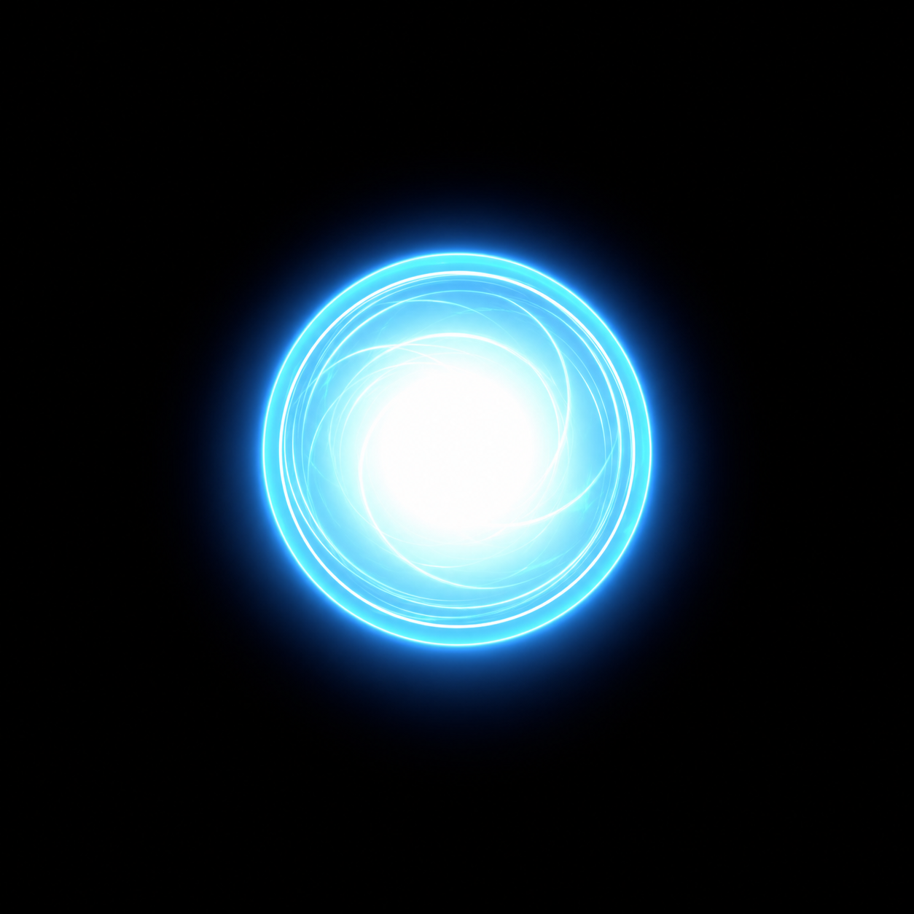
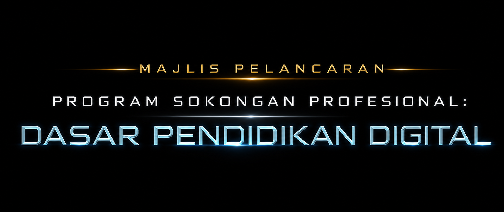

Operator sahaja · SPACE / L = mula · ESC = tutup filem
MOD UJIAN VR · Seret tetikus: pandang · W/A/S/D: bergerak · R: pusat semula · Klik sfera: mula
PERSEDIAAN LUAR TALIAN VR
Pilih dua filem yang telah disalin ke headset. Fail tidak akan dimuat turun dari Internet.
VIDEO 360° LATAR
FILEM PEMBUKAAN
GUNA FAIL TEMPATAN

